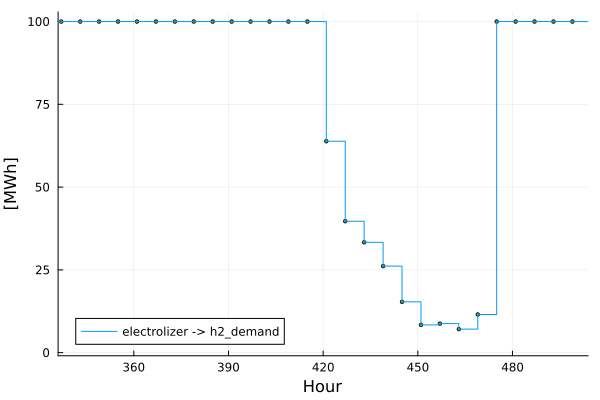
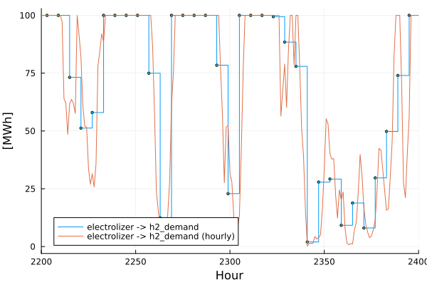

Fully-Flexible Time Resolution
Introduction
Tulipa allows mixing multiple time resolutions within the same problem.
For instance, by:
- energy carrier - electricity high, gas medium, heat low
- geographic area - local high, neighboring areas decreasing with distance
- time horizon - short-term high, long-term low
This is a useful feature for scaling large problems to make them solvable or to solve problems faster while iteratively tuning data - without losing granular detail in the area of interest.
More information is in the section Flexible Time Resolution.
For more nitty gritty nerdy details, you can read this reference.
Gao, Z., Gazzani, M., Tejada-Arango, D. A., Siqueira, A. S., Wang, N., Gibescu, M., & Morales-España, G. (2025). Fully flexible temporal resolution for energy system optimization. Applied Energy, 396, 126267. https://doi.org/10.1016/j.apenergy.2025.126267
Hydrogen sector on 6 hour resolution
Defining flexible temporal resolution requires the files assets_rep_periods_partitions and flows_rep_periods_partitions, so let's create them together.
The schemas of the files is described in the section Inputs.
Working in the folder tutorial-3:
Create a new file called
assets_rep_periods_partitions.csvCopy this text into the file:
asset,partition,rep_period,specification,milestone_year electrolizer,6,1,uniform,2030Create a new file called
flows_rep_periods_partitions.csvCopy this text into the file:
from_asset,to_asset,partition,rep_period,specification,milestone_year electrolizer,h2_demand,6,1,uniform,2030
If no partition or resolution is defined for an asset or flow, then the default values are uniform and 1.
Run the workflow
In my_workflow.jl you can simply change the name of your input directory and run your code.
From the Basics Tutorial, it should look something like this:
Remember to activate the environment in the current directory using the following code in your Julia REPL:
using Pkg: Pkg
Pkg.activate(".")# Load the packages
import TulipaIO as TIO
import TulipaEnergyModel as TEM
using DuckDB
using DataFrames
using Plots
# Define the directories
input_dir = joinpath(@__DIR__, "my-awesome-energy-system/tutorial-3")
# Create the connection and read the case study files
connection = DBInterface.connect(DuckDB.DB)
TIO.read_csv_folder(connection, input_dir)DuckDB.DB(":memory:")Alternatively to create csv files with the flexible time resolution information as before, you can create and fill in the tables assets_rep_periods_partitions and flows_rep_periods_partitions in the database with the following code and DuckDB SQL statements:
DuckDB.query(connection,
"""
CREATE OR REPLACE TABLE assets_rep_periods_partitions (
asset TEXT,
partition INTEGER,
rep_period INTEGER,
specification TEXT,
milestone_year INTEGER
);
"""
)
DuckDB.query(connection,
"""
INSERT INTO assets_rep_periods_partitions VALUES
('electrolizer', 6, 1, 'uniform', 2030);
"""
)
DuckDB.query(connection,
"""
CREATE OR REPLACE TABLE flows_rep_periods_partitions (
from_asset TEXT,
to_asset TEXT,
partition INTEGER,
rep_period INTEGER,
specification TEXT,
milestone_year INTEGER
);
"""
)
DuckDB.query(connection,
"""
INSERT INTO flows_rep_periods_partitions VALUES
('electrolizer', 'h2_demand', 6, 1, 'uniform', 2030);
"""
)(Count = [1],)You can print the tables you have created (either using the CSV files or the database connection) to see if everything matches and is filled in as intended
TIO.get_table(connection, "assets_rep_periods_partitions")| Row | asset | partition | rep_period | specification | milestone_year |
|---|---|---|---|---|---|
| String | Int32 | Int32 | String | Int32 | |
| 1 | electrolizer | 6 | 1 | uniform | 2030 |
TIO.get_table(connection, "flows_rep_periods_partitions")| Row | from_asset | to_asset | partition | rep_period | specification | milestone_year |
|---|---|---|---|---|---|---|
| String | String | Int32 | Int32 | String | Int32 | |
| 1 | electrolizer | h2_demand | 6 | 1 | uniform | 2030 |
Now, let's run the model and export the results to the output folder:
# Add the defaults
TEM.populate_with_defaults!(connection)
# Optimize the model
energy_problem =
TEM.run_scenario(connection);EnergyProblem:
- Model created!
- Number of variables: 89060
- Number of constraints for variable bounds: 80300
- Number of structural constraints: 108040
- Model solved!
- Termination status: OPTIMAL
- Objective value: 1.4718768475318378e8
- Objective breakdown:
- assets_fixed_cost_aggregated_vintage_method: 0.0
- assets_fixed_cost_compact_vintage_method: 0.0
- assets_investment_cost: 0.0
- flows_fixed_cost: 0.0
- flows_investment_cost: 0.0
- flows_operational_cost: 1.4718768475318378e8
- storage_assets_energy_fixed_cost: 0.0
- storage_assets_energy_investment_cost: 0.0
- units_on_operational_cost: 0.0
- vintage_flows_operational_cost: 0.0
Remember that you can always define and create the output directory if it doesn't exist to export the results to csv files. Then you can use the output_folder keyword argument in the run_scenario function to save the results in that folder.
From the statistics at the end, what are the number of constraints, variables, and objective function?
Explore the results
Explore the flow that goes from the electrolizer to the h2_demand:
Notice there are 1460 values (8760h/6h).
flows = TIO.get_table(connection, "var_flow")
from_asset = "electrolizer"
to_asset = "h2_demand"
year = 2030
rep_period = 1
filtered_flow = filter(
row ->
row.from_asset == from_asset &&
row.to_asset == to_asset &&
row.milestone_year == year &&
row.rep_period == rep_period,
flows,
)
plot(
filtered_flow.time_block_start,
filtered_flow.solution;
label=string(from_asset, " -> ", to_asset),
xlabel="Hour",
ylabel="[MWh]",
marker=:circle,
markersize=2,
linetype=:steppost, # try: stepmid, steppost, or steppre
xlims=(168 * 2, 168 * 3),
)
Explore the h2_balance duals in the results by displaying the first 5 rows of the table:
balance = TIO.get_table(connection, "cons_balance_consumer")
asset = "h2_demand"
year = 2030
rep_period = 1
filtered_asset = filter(
row ->
row.asset == asset &&
row.milestone_year == year &&
row.rep_period == rep_period,
balance,
)
first(filtered_asset, 5)| Row | id | asset | milestone_year | rep_period | time_block_start | time_block_end | dual_balance_consumer |
|---|---|---|---|---|---|---|---|
| Int64 | String | Int32 | Int32 | Int32 | Int32 | Float64 | |
| 1 | 8761 | h2_demand | 2030 | 1 | 1 | 1 | -305.0 |
| 2 | 8762 | h2_demand | 2030 | 1 | 2 | 2 | 100.0 |
| 3 | 8763 | h2_demand | 2030 | 1 | 3 | 3 | 100.0 |
| 4 | 8764 | h2_demand | 2030 | 1 | 4 | 4 | 100.0 |
| 5 | 8765 | h2_demand | 2030 | 1 | 5 | 5 | 100.0 |
What do you notice?
How is the resolution of the Consumer Balance Constraint defined?
The answer is in the cons_balance_consumer table, in the column time_block_start - it is defined by the highest resolution of the assets that is being balanced in the h2_demand, check the Concepts section for more on that. This means that the h2_demand is being balanced with the smr_ccs in a 1 hour resolution, and not with the electrolizer, which is in a 6 hour resolution. This means that the h2 balance constraint is being defined in a 1 hour resolution, and not in a 6 hour resolution.
What we can do? Update the flows_rep_periods_partitions file, either manually or using the DuckDB connection, to set the smr_ccs to a 6 hour resolution as well, so that the h2_demand is being balanced with both assets in a 6 hour resolution.:
from_asset,to_asset,partition,rep_period,specification,milestone_year
electrolizer,h2_demand,6,1,uniform,2030
smr_ccs,h2_demand,6,1,uniform,2030or using the DuckDB connection:
DuckDB.query(connection,
"""
INSERT INTO flows_rep_periods_partitions VALUES
('smr_ccs', 'h2_demand', 6, 1, 'uniform', 2030);
"""
)(Count = [1],)Run again and explore the results once more...
# Optimize the model
energy_problem =
TEM.run_scenario(connection);EnergyProblem:
- Model created!
- Number of variables: 81760
- Number of constraints for variable bounds: 73000
- Number of structural constraints: 93440
- Model solved!
- Termination status: OPTIMAL
- Objective value: 1.4718768475318453e8
- Objective breakdown:
- assets_fixed_cost_aggregated_vintage_method: 0.0
- assets_fixed_cost_compact_vintage_method: 0.0
- assets_investment_cost: 0.0
- flows_fixed_cost: 0.0
- flows_investment_cost: 0.0
- flows_operational_cost: 1.4718768475318453e8
- storage_assets_energy_fixed_cost: 0.0
- storage_assets_energy_investment_cost: 0.0
- units_on_operational_cost: 0.0
- vintage_flows_operational_cost: 0.0
balance = TIO.get_table(connection, "cons_balance_consumer")
asset = "h2_demand"
year = 2030
rep_period = 1
filtered_asset = filter(
row ->
row.asset == asset &&
row.milestone_year == year &&
row.rep_period == rep_period,
balance,
)
first(filtered_asset, 5)| Row | id | asset | milestone_year | rep_period | time_block_start | time_block_end | dual_balance_consumer |
|---|---|---|---|---|---|---|---|
| Int64 | String | Int32 | Int32 | Int32 | Int32 | Float64 | |
| 1 | 8761 | h2_demand | 2030 | 1 | 1 | 6 | 195.0 |
| 2 | 8762 | h2_demand | 2030 | 1 | 7 | 12 | 195.0 |
| 3 | 8763 | h2_demand | 2030 | 1 | 13 | 18 | 195.0 |
| 4 | 8764 | h2_demand | 2030 | 1 | 19 | 24 | 195.0 |
| 5 | 8765 | h2_demand | 2030 | 1 | 25 | 30 | 19.5 |
Do you notice the difference? Now the h2_demand is being balanced with both assets in a 6 hour resolution. Check the time_block_start column in the cons_balance_consumer table 😉
Change the specification
The parameter specification allows three values: uniform,math, or explicit.
Some examples on how to set it up are in the docs for the TulipaEnergyModel._parse_rp_partition function.
What is the equialent of a partition of 6 in a uniform specification in a math specification?
Compare with the hourly case from the Assets & Flows tutorial
If you want to compare results of two models, you can create a new connection, a new energy problem and compare result. One thing that could be interesting to consider is changing partitions in flows_rep_periods_partitions and assets_rep_periods_partitions to 1. Once changed, we can solve a new energy problem as such:
conn_hourly = DBInterface.connect(DuckDB.DB)
input_dir = joinpath(@__DIR__, "my-awesome-energy-system/tutorial-3")
TIO.read_csv_folder(conn_hourly, input_dir)
TEM.populate_with_defaults!(conn_hourly)
hourly_energy_problem = TEM.run_scenario(conn_hourly);EnergyProblem:
- Model created!
- Number of variables: 96360
- Number of constraints for variable bounds: 87600
- Number of structural constraints: 122640
- Model solved!
- Termination status: OPTIMAL
- Objective value: 1.4854146333461672e8
- Objective breakdown:
- assets_fixed_cost_aggregated_vintage_method: 0.0
- assets_fixed_cost_compact_vintage_method: 0.0
- assets_investment_cost: 0.0
- flows_fixed_cost: 0.0
- flows_investment_cost: 0.0
- flows_operational_cost: 1.4854146333461672e8
- storage_assets_energy_fixed_cost: 0.0
- storage_assets_energy_investment_cost: 0.0
- units_on_operational_cost: 0.0
- vintage_flows_operational_cost: 0.0
Notice that we change the name of the connection and the name of the energy problem (also, we are not exporting the results, but it can be done in a new folder, if needed).
Compare the number of constraints, variables, and objective function between the two problems.
What do you notice? Is it what you where expecting?
Let's plot the flows together, for a specific time period in the year:
flows = TIO.get_table(connection, "var_flow")
from_asset = "electrolizer"
to_asset = "h2_demand"
year = 2030
rep_period = 1
filtered_flow = filter(
row ->
row.from_asset == from_asset &&
row.to_asset == to_asset &&
row.milestone_year == year &&
row.rep_period == rep_period,
flows,
)
plot(
filtered_flow.time_block_start,
filtered_flow.solution;
label=string(from_asset, " -> ", to_asset),
xlabel="Hour",
ylabel="[MWh]",
marker=:circle,
markersize=2,
linetype=:steppost, # try: stepmid, steppost, or steppre
xlims=(2200, 2400),
)
hourly_flows = TIO.get_table(conn_hourly, "var_flow")
hourly_filtered_flow = filter(
row ->
row.from_asset == from_asset &&
row.to_asset == to_asset &&
row.milestone_year == year &&
row.rep_period == rep_period,
hourly_flows,
)
plot!(
hourly_filtered_flow.time_block_start,
hourly_filtered_flow.solution;
label=string(from_asset, " -> ", to_asset, " (hourly)"),
)